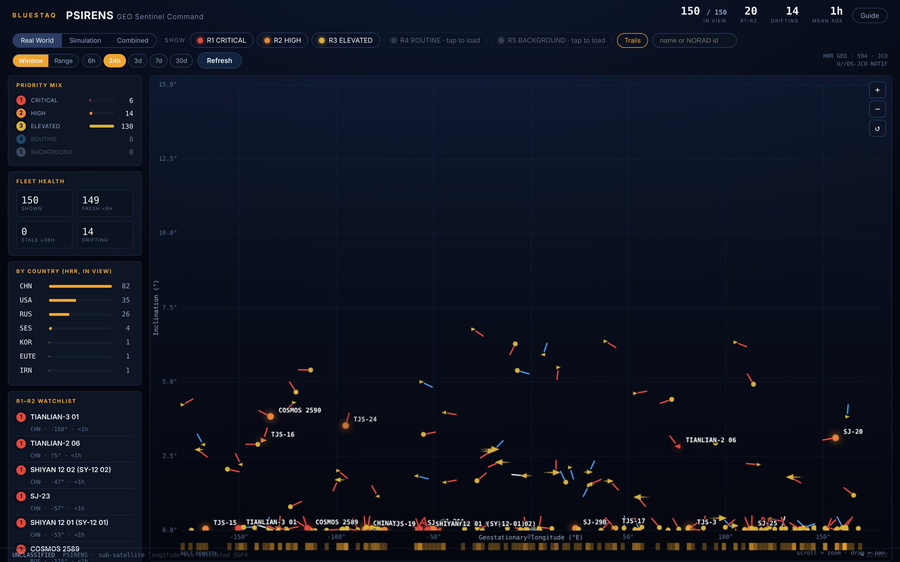
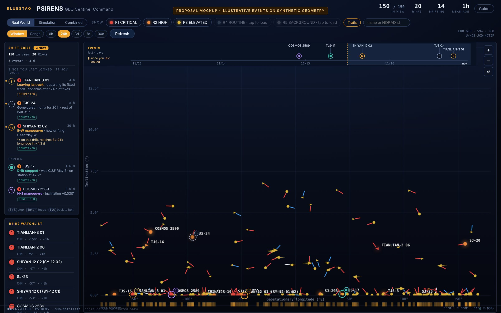

The decision in one line
Detect manoeuvres and silences on the server, list them in a Shift Brief, put them on a timeline, and give every event a one-key focus view carrying the evidence behind it.
What you do
Open PSIRENS at handover. Read three new events at the top of the rail. Press j and Enter to see each one.
What PSIRENS does
Fits every object's track either side of every candidate split, every refresh cycle, and only calls it an event when two independent fits disagree beyond physics and noise.
What it unlocks
A manoeuvre is seen within hours instead of when someone happens to notice a bent trail, and the drift rate on screen stops being wrong after a burn.
The problem
The operator's first question at a handover is "what changed since I last looked?" PSIRENS cannot answer it today.
- The default view carries 150 objects at ranks 1 to 3. A manoeuvre shows only as a slightly different arrowhead or a trail that bends, somewhere in that field.
- The top of the rail spends its space on Priority mix, Fleet health and By-country: stable inventory numbers that rarely prompt an action.
- Silence is invisible. An object that stops reporting keeps its last position and fades. Nothing says "this one went quiet".
Drag the slider: the current interface on the left, the proposal on the right. All five events are in both pictures. Only one of them shows you.


PROPOSEDAS-ISThe change: three parts, one idea
1. Shift Brief
Replaces the inventory panels at the top of the left rail. Events newest first, split at since you last looked, each with rank, type, age, the numbers that justify it and a confidence tier.
2. Event timeline
A four-day strip above the plot. One glyph per event, dashed when suspected, the unread period shaded. Clusters across objects show at a glance.
3. Focus mode
One key frames the object and its neighbours, splits the trail at the burn, projects the drift and opens an evidence chart in the inspector.
Event types
| Glyph | Event | What triggers it |
|---|---|---|
| ⇆ | E-W manoeuvre | Significant change in fitted drift rate across a split |
| ■ | Drift stopped | Drift rate falls to station-keeping level |
| ⇅ | N-S manoeuvre | Step change in inclination |
| ? | Leaving its track | Latest fixes depart from the fitted prediction (early warning) |
| ○ | Gone quiet | No fix for 12 h. In the build, only while the rest of the belt is current, so a feed outage raises the existing staleness banner instead of 594 separate events. The prototype does not yet have this condition. |
Two confidence tiers
- SUSPECTED Early warning only, or evidence that peaks at the edge of the data. Never stated as fact.
- CONFIRMED Two independent 48-hour fits either side of the split disagree beyond a physical floor and six standard errors.
Where a drifter is heading towards another high-interest object the entry says so: "on this drift, reaches SJ-21's longitude in ~4.3 d". That is arithmetic at constant rate, labelled as such, not a statement of intent.
Walkthrough
Captured from the real 1.6.22 interface with the proposed elements painted over it. The events come from the prototype detector's output, not from hand-typed data. Click a numbered marker, or step through with the buttons. Click the image to see it full size.
The drift defect, live
Today's drift fit looks back 72 hours. When a burn falls inside that window the fit averages "on station" with "drifting" and reports a rate that is neither. Event detection fixes it by fitting only after the most recent confirmed event. Move the sliders: the readout is computed in this page with the same model the app uses (a line with a sidereal-period libration term).
Evidence the detector works
Prototype built on the shipped psirens.astro.drift_fit, re-run on 16 November 2026 before this page was written. Every number below is from that run.
Grey bars sit below the detector's physical floor by design: changes that small are inside station-keeping noise and are not called.
Synthetic belt. Each object has eccentricity libration at the sidereal period (e from 0.0002 to 0.003), a two-provider longitude bias up to ±0.012°, per-fix scatter of 0.004° to 0.02°, ragged 45 to 90 minute sampling with 30% dropout, and a burn at a random time 36 to 200 hours before the end.
Scenario store: injected against detected
| Injected | Detected |
|---|---|
| SHIYAN 12 02, E-W burn 30 h ago, 0.60°/day W | CONFIRMED burn at 30 h, 0.591°/day W |
| TJS-17, drift 0.25°/day E stopped 40 h ago | CONFIRMED 39 h, 0.23 to -0.02°/day |
| COSMOS 2589, inclination +0.030°, 58 h ago | CONFIRMED +0.030°, timed 10 h late |
| TIANLIAN-3 01, 1.0°/day E burn 7 h ago | SUSPECTED alarmed 3 h after the burn |
| TJS-24, no fix for 19 h | Gone quiet, last fix 20 h ago |
What this does not prove
Read before deciding.
- INFERENCE The noise model is mine, not UDL's. The thresholds (E-W floor 0.02°/day, N-S floor 0.008°, six sigma) are tuned against synthetic scatter. Live multi-provider scatter may be wider, and a provider bias that changes with the provider mix could look like a step. Calibration against live data is the first build task: run the detector offline over a copy of the deployed store and count events per day. A real belt should produce a handful, not dozens.
- N-S timing is coarse. 10 hours late on the scenario. Medians over 48-hour windows are robust but blunt: adequate for a brief, not for a timeline you would brief a commander from. The evidence block will say so.
- Drifts under about 0.05°/day are not detected. That is the station-keeping band and is deliberate, but a slow, patient approach will not appear. The brief must say "no detectable event", never "nothing happened".
- "Since you last looked" is per browser. Kept in local storage, as the Operator Guide's progress already is. No server state and no user identity, which matters while the
user.emaillogging question is open. - The projection is arithmetic, not intelligence. Constant rate to a longitude, labelled as such.
How it would be built
Server
A new events.py with the two detectors and the early-warning test. GET /api/events?view=&ranks= returns events with their evidence. Computed once per refresh cycle in the background thread and cached, never per request.
ESTIMATE about 25 ms per object over ten days, roughly 15 s of background CPU per hourly cycle for 594 objects.
Drift row fix
The drift fit in the tracks payload uses only samples after the most recent confirmed E-W event, and says so (drift_since_event). Worth doing even if the rest is declined.
SPA and guide
Brief panel, timeline, plot halos, focus mode, evidence block, keyboard stepping. A new guide section, recaptured figures, two self-check questions and a sandbox drill: "find the object that changed".
Guards, each proven by a deliberate revert
- Detector tests: zero events across quiet synthetic objects, detection and timing across the burn bands, and the TIANLIAN edge case as a red case (removing the edge rule must confirm it early and fail).
- API tests: shape, ETag, rank filter, nothing computed per request.
- Layout probe: the brief lists events,
jandkmove the selection, Enter focuses (published ondataset.focus), timeline glyph count matches the brief, Esc restores the full view. - The drift row: SHIYAN 12 02's scenario rate must read 0.59 after the fix and 0.22 before it.
| Work | Effort (estimate) |
|---|---|
| Server, detectors and tests | 1 session |
| SPA: brief, timeline, focus, evidence | 2 sessions |
| Guide, layout probe, calibration tooling | 1 session |
| Live calibration run | Ash's networked workstation |
Your decisions
Pick an answer for each. The page writes the reply for you to paste back. Nothing is sent anywhere.
Reproducing this
The prototype and the mockup driver are in prototype/ beside this page. From a scratch directory with the project venv:
python prototype/detect.py # synthetic sensitivity and false positives python prototype/early.py prototype # early-warning latency and false alarms python prototype/scenario.py <seed-dir> <out-dir> # inject the five events into a guide seed python prototype/events.py prototype <out-dir>/history.json <seed-dir>/hrr.json events.json node prototype/mock.js <app-url> <out-dir> events.json <out-dir>/history.json <seed-dir>/hrr.json
The guide seed comes from tools/guide_seed.py. mock.js drives the real 1.6.22 interface and paints the proposed elements over it; everything under the paint is the shipped application. The mockup banner says "illustrative events on synthetic geometry", and it means it.